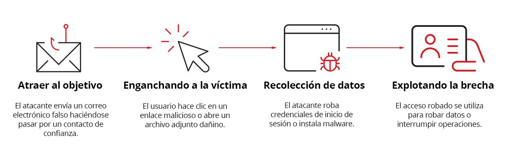

Introducción
Hoy en día, las organizaciones enfrentan un número creciente de amenazas informáticas que buscan comprometer la información y los sistemas. Muchos de estos ataques no se basan únicamente en vulnerabilidades técnicas, sino en la manipulación del factor humano mediante técnicas de ingeniería social, como el phishing. Por esta razón, se ha vuelto fundamental implementar estrategias que ayuden a capacitar a los usuarios para reconocer riesgos y adoptar buenas prácticas de seguridad en su uso cotidiano de la tecnología.
Para atender esta necesidad, han surgido diversas plataformas especializadas en la concientización y capacitación en ciberseguridad, las cuales utilizan herramientas como simulaciones de ataques, programas de entrenamiento interactivo y análisis del comportamiento de los usuarios. Entre las soluciones más conocidas se encuentran Hoxhunt, Proofpoint, KnowBe4, Cofense PhishMe, Phished, NINJIO, Mimecast y Infosec IQ.
Se presentan fichas descriptivas de estas plataformas con el objetivo de analizar sus principales características, las métricas que utilizan para evaluar el desempeño de los usuarios y los aspectos relacionados con la ética y la privacidad durante los procesos de capacitación. Este análisis permite comprender cómo estas herramientas contribuyen al fortalecimiento de la cultura de seguridad dentro de las organizaciones y al desarrollo de usuarios más preparados frente a posibles ataques informáticos.
Fichas Descriptivas
- Hoxhunt: Es una plataforma de formación en ciberseguridad enfocada en la prevención de ataques de phishing y otras técnicas de ingeniería social. Su objetivo es mejorar la capacidad de los usuarios para reconocer correos electrónicos maliciosos y reportarlos correctamente dentro de una organización. La plataforma utiliza simulaciones de phishing automatizadas y entrenamiento interactivo para crear una cultura de seguridad en la que los empleados actúan como un cortafuegos humano frente a amenazas digitales Además, integra mecanismos de aprendizaje personalizado y retroalimentación inmediata para reforzar el conocimiento y mejorar la retención de conceptos relacionados con la seguridad informática.
- Proofpoint: Es una plataforma de capacitación en ciberseguridad diseñada para ayudar a las organizaciones a reducir el riesgo humano frente a ataques informáticos, especialmente ataques de phishing. La plataforma combina simulaciones de ataques reales, módulos de aprendizaje y análisis del comportamiento de los usuarios para mejorar la cultura de seguridad dentro de una organización. Su enfoque consiste en identificar a los usuarios con mayor riesgo y proporcionarles entrenamiento específico basado en datos y en inteligencia de amenazas recopilada a gran escala.
- KnowBe4: KnowBe4 es una plataforma de capacitación en concienciación de ciberseguridad diseñada para ayudar a las organizaciones a reducir el riesgo humano frente a ataques informáticos. El sistema utiliza videos educativos, contenido interactivo y simulaciones de phishing para enseñar a los empleados a identificar amenazas digitales y aplicar buenas prácticas de seguridad. Su objetivo principal es gestionar el factor humano en la seguridad informática, educando a los usuarios sobre ataques de ingeniería social, phishing y otras amenazas comunes. La plataforma permite a las organizaciones desarrollar una cultura de seguridad mediante programas de entrenamiento continuos y evaluaciones del comportamiento de los usuarios frente a amenazas simuladas.
- Cofense: Es una plataforma de defensa contra phishing que combina inteligencia de amenazas, simulaciones de ataques y capacitación en concienciación de seguridad para reducir el riesgo humano dentro de las organizaciones. Su enfoque se centra en el análisis y respuesta a correos maliciosos que logran evadir los filtros tradicionales de seguridad. La plataforma utiliza inteligencia basada en millones de reportes de usuarios y datos de ataques reales para detectar amenazas, mejorar la respuesta ante incidentes y fortalecer el entrenamiento de los empleados frente a ataques de ingeniería social.
- Phished: Es una plataforma de capacitación en concienciación de ciberseguridad que busca reducir el riesgo humano dentro de las organizaciones mediante entrenamiento automatizado y simulaciones de phishing. La plataforma se centra en cambiar el comportamiento de los empleados frente a amenazas digitales como el phishing y otras técnicas de ingeniería social. Su enfoque combina simulaciones personalizadas, micro-aprendizaje interactivo y análisis del comportamiento de los usuarios para fortalecer la cultura de seguridad dentro de una empresa.
- NINJIO: Es una plataforma de capacitación en concienciación de ciberseguridad cuyo objetivo es desarrollar buenos hábitos de seguridad digital dentro de las organizaciones. Su enfoque se centra en reducir el riesgo de brechas de seguridad causadas por errores humanos mediante programas de formación que aumentan la conciencia sobre amenazas como el phishing y la ingeniería social. La plataforma busca fortalecer la cultura de seguridad dentro de las empresas mediante contenidos educativos y evaluaciones que permiten mejorar el comportamiento de los usuarios frente a ataques digitales.
- Mimecast: Es una plataforma de capacitación en concienciación de ciberseguridad diseñada para reducir el riesgo humano dentro de las organizaciones. La solución forma parte del ecosistema de seguridad de Mimecast y utiliza análisis de comportamiento y señales de riesgo para identificar a los usuarios con mayor probabilidad de cometer errores de seguridad. Con base en estos datos, la plataforma ofrece entrenamiento personalizado y automatizado que ayuda a los empleados a reconocer amenazas digitales y adoptar prácticas seguras al utilizar correo electrónico e internet.
- Infosec IQ: Es una plataforma de capacitación en concienciación de ciberseguridad y simulación de phishing diseñada para ayudar a las organizaciones a reducir el riesgo humano en incidentes de seguridad. La herramienta proporciona programas de formación que enseñan a los empleados a identificar amenazas como phishing, ingeniería social y malware, con el objetivo de mejorar la cultura de seguridad dentro de una empresa. La plataforma combina entrenamiento educativo, simulaciones de ataques y análisis de desempeño para fortalecer los hábitos de seguridad de los usuarios. Además, ofrece contenidos adaptados a diferentes industrias y roles dentro de una organización para que los empleados aprendan a defenderse de las amenazas que tienen mayor probabilidad de enfrentar en su trabajo.
Phishing
Fases

Desmostración de un ataque
Tabla Comparativa de Plataformas
| Plataforma | Simulación de Phishing | Características Principales | Métricas de Evaluación | Ventaja Destacada | Limitación Principal | Enfoque de Entrenamiento / Ética |
|---|---|---|---|---|---|---|
| Hoxhunt | Correos que imitan tácticas reales; incluye múltiples vectores como correo, QR o mensajes. | Simulaciones automatizadas, gamificación y micro-aprendizaje interactivo. | Tasa de reporte, tiempo de reporte (dwell time) y detección de amenazas reales. | Automatiza campañas con poca administración. | Configuración inicial e integración complejas. | Construye una cultura donde los empleados actúan como un cortafuegos humano. |
| Proofpoint | Plantillas basadas en amenazas del mundo real; simulan enlaces maliciosos, robo de datos o adjuntos. | Plantillas de ataques reales, botón PhishAlarm y entrenamiento automatizado. | Clics en enlaces, descargas y detección de usuarios de alto riesgo (Very Attacked People). | Utiliza inteligencia de amenazas reales. | Costo elevado para organizaciones pequeñas. | Identifica usuarios con mayor riesgo para darles entrenamiento específico. |
| KnowBe4 | Envío automatizado de correos electrónicos que imitan ataques reales para evaluar el comportamiento. | Extensa biblioteca, contenido interactivo, gamificación e IA. | Progreso en entrenamiento y monitoreo del desempeño frente a amenazas. | Implementación sencilla al estar basada en la nube. | Los usuarios pueden recibir contenido repetido. | Busca gestionar el factor humano desarrollando una cultura de seguridad continua. |
| Cofense | Simulaciones adaptativas basadas en ataques reales; incluye correo, smishing (SMS), vishing (llamadas) y QR. | Simulaciones adaptativas, automatización de respuesta y botón de reporte. | Correos reportados, nivel de susceptibilidad y tiempo de respuesta. | Integra inteligencia artificial y validación humana. | Enfocado principalmente en amenazas de correo electrónico. | Mejora la respuesta a incidentes basándose en datos de ataques reales. |
| Phished | Impulsadas por Inteligencia Artificial, generando campañas personalizadas al contexto y nivel del usuario. | Simulaciones con IA, Phished Academy y Zero Incident Mail. | Behavioral Risk Score, progreso en simulaciones y módulos. | Entorno seguro para entrenamiento sin riesgo para la organización. | Riesgo de "fatiga de seguridad" si es muy repetitivo. | Cambia el comportamiento mediante lecciones cortas y un entorno de prueba inofensivo. |
| NINJIO | Utiliza la función Phish3D para enviar correos simulados y evaluar la detección de amenazas. | Videos animados con narrativa, simulaciones y cuestionarios. | Resultados de cuestionarios y nivel de participación. | Contenido educativo atractivo basado en historias. | El estilo animado puede parecer infantil para algunos. | Desarrolla buenos hábitos de seguridad ilustrando situaciones reales. |
| Mimecast | Pruebas con plantillas realistas basadas en situaciones comunes (promociones falsas, restablecimiento de contraseña). | Análisis de comportamiento, módulos en video con humor (minisitcoms). | Pruebas de phishing, evaluaciones previas y posteriores. | Capacitación personalizada basada en análisis de riesgo. | Enfoques universales menos efectivos si no se personalizan. | Identifica señales de riesgo para ofrecer entrenamiento sin culpar al usuario. |
| Infosec IQ | Ejecuta campañas de phishing con múltiples plantillas que imitan ataques reales. | Entrenamiento basado en roles/industria, automatización y soporte SCORM. | Resultados de campañas y reportes por departamento o región. | Amplia biblioteca e integración con sistemas de aprendizaje corporativos (LMS). | Requiere participación constante de los empleados. | Adapta el contenido al contexto laboral del empleado para hacerlo más relevante. |
Reflexión Técnica
En conclusión, las plataformas de concientización en ciberseguridad representan una herramienta importante para fortalecer la preparación de los usuarios frente a amenazas digitales, especialmente aquellas relacionadas con la ingeniería social y el phishing. Las herramientas anteriores permiten implementar simulaciones, programas de capacitación y mecanismos de evaluación que ayudan a los usuarios a reconocer intentos de ataque y mejorar sus hábitos de seguridad.
El análisis de estas plataformas también permite identificar la importancia de combinar la capacitación tecnológica con un enfoque ético y responsable en el manejo de la información de los participantes. De esta manera, el uso adecuado de estas herramientas no solo contribuye a reducir riesgos de seguridad, sino que también promueve una cultura de prevención y conciencia dentro de las organizaciones, donde los usuarios se convierten en un elemento activo para la protección de los sistemas y la información.
Referencias Bibliográficas
- Cofense. (s/f). Phishing defense powered by Al & human insight. Cofense.com. https://cofense.com/
- Gardey. (2024). ¿Qué es Hoxhunt y cómo funciona? (Visión general y FAQ). Guardey.com. https://www.guardey.com/es/what-is-hoxhunt/
- Gardey. (2024). ¿Qué es Ninjio y cómo funciona? (Visión general y FAQ). Guardey.com. https://www.guardey.com/es/what-is-hoxhunt/
- Gardey. (2026). ¿Qué es KnowBe4 y cómo funciona? (Visión general y FAQ). Guardey.com. https://www.guardey.com/es/what-is-knowbe4/
- Hoxhunt. (2026, febrero 27). Best phishing simulation tools for enterprises (2026 edition). Hoxhunt.com. https://hoxhunt.com/blog/best-phishing-simulation-tools
- Infosecinstitute. (2026). Security awareness & phishing training. Infosecinstitute.com. https://www.infosecinstitute.com/iq/
- Mimecast. (s/f). Gestión de riesgos humanos y seguridad avanzada del correo electrónico. Mimecast. https://www.mimecast.com/es/
- Phished. (2021, junio 7). ¿Qué es el Phishing? Protégete de las Amenazas Cibernéticas. Phished. https://phished.io/es/phishing
- Proofpoint. (2026). Enterprise cybersecurity solutions, services & training. Proofpoint. https://www.proofpoint.com/us
- Westcon. (s/f). Proofpoint Westconcomstor.com. https://www.westconcomstor.com/es/es/vendors/proofpoint.html